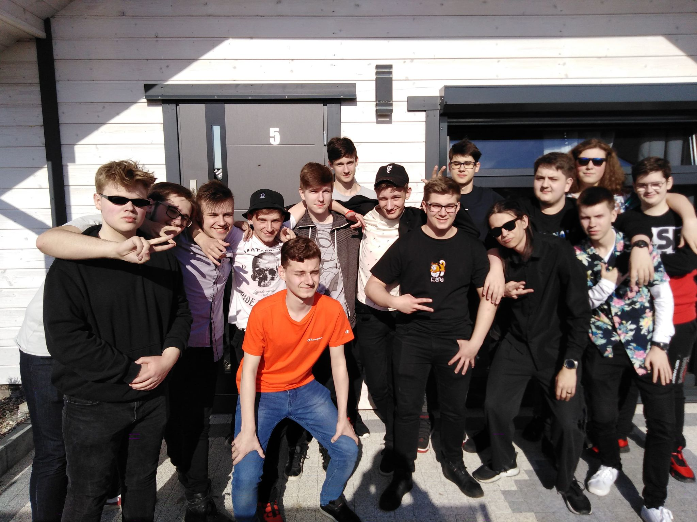

Czym jest BGT?
BGT, czyli Blancior Gancior zostało założone w 2019 roku przez Scripto, pierwotnie drużyna na Rolniczak Lan Party, po jakimś czasie rozpadło się, ale w późnym roku 2021 roku powróciło, i od tamtego czasu powiększyło się ponad trzykrotnie!
Od tamtego czasy odbyły sie 2 BGT Asylum, 0 BGT Grilli, oraz niezliczona ilość innych aktywności!
Dzisiaj, BGT jest jedną a najprężniej rozwijających się firm na rynku, zajmuje się wszystkim, od inwestycji po sprzedaż narkotyków.
Na stan dzisiejszy BGT Posiada: 3 wieżowce, 14 kamperów, 8 podfirm, 15 oddziałów w całej europie, 3 wytwórnie i ogromną ilość fanów.
blanciorgancior.pl
